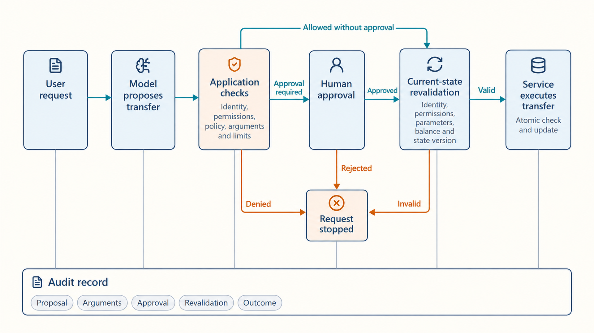
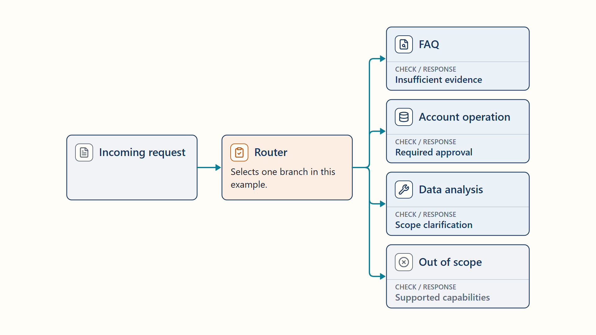
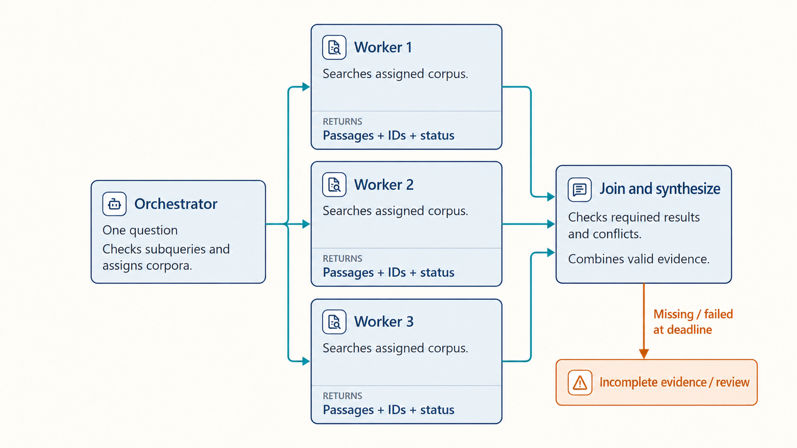

8 Building and evaluating AI workflows
An answer supported by retrieved evidence may still leave a request unfinished. Suppose a customer asks whether an order qualifies for a refund. Answering requires the right order, the current policy, and a check that the reply follows from them. A workflow connects these operations. Issuing the refund would require a separate authorized operation.
Building this workflow starts with the required result: an answer supported by the current policy for an order that belongs to the caller, or a reason for review when the checks fail. That result determines the construction sequence:
- The required result determines which data and checks are needed.
- Each step has an input, an expected output, and a failure path.
- Input dependencies determine the connections between steps.
- Successful and failed requests establish whether those connections work. A comparison with a simpler workflow that keeps the required checks measures the difference in answer quality, completion time, and cost.
![Eight section cards for Sections 8.1 to 8.8: a proposed transfer checked for identity, permissions, balance, limits, policy and required approval; service-enforced retry with the same idempotency key; three assumed-independent stages with 0.95 cubed approximately 0.86; one route per request; independent workers and a join; criterion feedback with revision, all-checks-pass release and terminal budget stop; approval with current-state revalidation; and alternative chains, routes and parallel work with complementary feedback and approval controls.](../assets/fig-m1-c08-f01.png)
Chains, routing, parallel work, and feedback loops organize different kinds of task. Approval and validation can be added to any of them when the action requires those checks. These patterns can be combined without following a fixed ladder of increasing complexity.
8.1 Application-controlled workflow steps
Workflow
A workflow is a predefined sequence or graph of steps. Application code specifies the steps and the rules for moving between them, including how each result selects the next step. Steps can call a model, retrieve data, invoke a service, or check an output.
For the refund question, account lookup supplies the caller’s order for validation, and policy search supplies evidence for drafting. The model drafts a reply from the ticket and policy. A reply check against the policy and account data then determines whether the workflow returns the draft or sends the request for review. The connections and failure paths remain in application code.
Simple implementation
A simple implementation runs the workflow in one Python process. A request handler passes the question and authenticated caller information to a workflow function. That function calls account lookup, policy search, drafting, and reply validation in order, passing each result to the step that needs it. It returns a checked reply or a failure status. Section 8.2 shows a short linear function; Section 8.3 extends it with account and intent checks.
Software packages
Workflow code can call a model client directly. Field-validation packages check exchanged data; graph and pipeline libraries manage connections between steps. The comparison groups software by these different jobs. They are alternatives and complements, not one required stack.
Table 8.1: Optional software comparison: model access, field validation, graph execution, and pipelines serve different workflow roles.
| Software | Role | Useful when | Limits |
|---|---|---|---|
openai1 |
Model API client | Workflow code sends model requests directly | An OpenAI-compatible format does not guarantee support for every operation or parameter. |
Pydantic2 |
Field and constraint validation | Steps exchange structured data | Valid fields do not establish factual support or permission. |
LangGraph3 |
Graph execution with branches and saved state | State and transitions need an explicit graph | LangChain is not required; task rules still come from the application. |
LangChain4 |
Model and tool integrations plus agent loops | Reusing integrations across providers and tools | Integrations do not determine permitted actions or answer correctness. |
| Haystack5 | Component pipelines for indexing and answering | Retrieval and generation form a connected pipeline | Connection-type checks do not establish evidence quality. |
| LlamaIndex Workflows6 | Event-driven steps in llama-index-workflows |
Events determine which step runs next | Event types do not define task policy or permission. |
Plain Python functions are enough to connect a short chain. Section 1.5 shows a model-client request, Section 6.7 connects retrieval packages, and Section 8.2 introduces graph execution. Section 12.7 joins these components in one complete example. Appendix A gives further library responsibilities and limits.
Tool calls and application checks
In model function calling, the model returns a tool name and arguments, such as transfer_funds(amount=...). Application code checks identity, balance, policy, limits, and required approval before submitting the request for execution. Every action that exposes data or changes state needs a fresh check of the caller, resource, arguments, allowed scope, and expected effect. OWASP guidance on excessive agency7 describes why applications must limit model-driven actions and permissions. Tool results are also untrusted inputs: a web page or service response can contain instructions aimed at the model.

8.2 Workflow state and transitions
Workflow
This method applies to tasks with known phases, stable policies, expected branches, or high-impact state changes. It is useful when the process needs clear records, time limits, and a defined response to failure.
Application code checks the required fields and conditions at each transition. The same control logic can be reused across requests, while changes to models, tools, policies, and data still need tests.
Limitation: Fixed sequential paths can perform poorly when the next useful action depends on unforeseen observations.
A tool can complete one operation, but a refund request needs several operations in the right order. When the order and branches are known, encoding them in a workflow avoids asking the model to choose the sequence anew for every request.
That reduces variation and lets application code enforce each branch. A model may still supply text or a classification used by those rules. StateFlow8 is one research example of state-driven LLM workflows. Its reported gains are specific to the evaluated tasks rather than proof that one workflow design is always best.
The workflow state is the data available at one step, such as the order ID, retrieved policy, draft reply, and status. A transition runs a step, checks its result, and updates that data before selecting the next step. For the refund question, extraction produces an order ID, the account check verifies that it belongs to the caller, retrieval supplies the policy, and answer validation determines whether the draft may be returned. A failed check selects a recorded fallback instead of continuing with unchecked data.
Idempotent operations and retries
Idempotent operation: An operation whose intended effect is the same whether an identical request is applied once or several times. An application idempotency key identifies repeated submissions of one operation. The service uses it to recognize a retry rather than a new operation.
For example, a refund service should associate one key with one set of refund parameters and one result. A matching retry should return the stored result while the key and result are retained. Before the first operation finishes, a duplicate request must wait or be rejected rather than trigger another payment. The service must reject reuse of the key with different parameters. It must also handle simultaneous retries as one operation, using an atomic update, which checks and changes the record as one indivisible operation, or a service that provides this behavior. A separate check followed by a payment can still duplicate the effect if two requests pass the check together.
Key retention and recovery after a partial failure must be defined by the service. Storing a key in workflow state alone does not make a payment idempotent.
A workflow can still call an LLM. Reliability comes from controlling when it is called, what inputs it receives, how outputs are checked, and which branch follows.
A chain of ordinary functions
Plain functions can pass each result to the next step. This short Python fragment retrieves policy passages, drafts an answer, and checks its support. The request handler has already checked that question is nonempty and authenticated caller. The application supplies three helpers: find_allowed_policy returns passages the caller may access, draft_reply returns text, and supported returns whether the reply’s claims follow from those passages. Empty retrieval or a failed support check returns a review status. Helper exceptions propagate to the caller, which must log the failure and stop. The function sends no message and changes no customer data.
Example 8.1: An ordinary function connects retrieval, drafting, and a support check.
def answer_policy_question(question, caller):
passages = find_allowed_policy(question, caller)
if not passages:
return {"status": "human_review", "reason": "no policy evidence"}
draft = draft_reply(question, passages)
if not supported(draft, passages):
return {"status": "human_review", "reason": "unsupported reply"}
return {"status": "reply", "reply": draft}The variables passages and draft carry results between steps. The order is written in the function, including the checks that stop later calls. Section 8.3 extends this pattern with request classification, extracted fields, and an account check.
A graph library becomes useful when branches, retries, and saved state make the connections hard to follow. The same functions can become graph steps rather than being called directly in one function.
Graph libraries and saved state
In LangGraph, a node is a function that reads state and returns updates, and an edge specifies which node runs next.9 The application can declare Python state with TypedDict, a dataclass, or a Pydantic model. TypedDict describes intended field types but does not check values at runtime, so application checks are still required.
A reducer specifies how to apply an update to a field. For example, a node can append one trace entry rather than replace the entire trace. A conditional edge calls an application function on the current state to choose the next node, so branch selection stays in code.
Compiling the graph checks its structure and can attach a checkpointer, a component that saves workflow state and restores it for later calls, when state must survive between calls (Section 9.5). Section 12.7 builds one complete graph.
8.3 Building and measuring prompt chains
A support reply needs information that one model request may not contain: the customer’s order details and the applicable policy. Building the reply therefore includes obtaining those inputs and checking them before returning an answer. Prompt chaining is a workflow pattern that splits a task into ordered steps, with intermediate outputs that can be checked before the next step runs. Some steps call a model. Others retrieve data or apply rules in code. This separation also makes failures easier to locate than when one model call mixes extraction, reasoning, and answer generation.
For the support chain, the application first obtains account data for the authenticated caller. Classification selects a supported request type. Extraction supplies the order ID and product type needed for the account check and policy lookup. Drafting receives the ticket and retrieved policy. Reply validation checks the draft against the policy and account data. Each step has a required result, so an unsupported request or failed check selects a review path before later steps run. In a static chain, this order is fixed by the required inputs rather than chosen anew by the model.
Routing, parallel branches, and feedback loops address cases where one fixed chain is insufficient. Anthropic’s practitioner guide10 describes these recurring patterns. The following sections explain how to construct them and measure whether the added work helps.
Prompt chaining has operational trade-offs. Steps that call a model can use narrower prompts. Testable output specifications make intermediate results easier to check. However, every model call adds latency, token expense, and a potential failure point. Early errors can also propagate downstream unless validators halt or repair invalid intermediate representations immediately. Transformations that follow deterministic logic, such as string parsing, arithmetic, or schema validation, belong in code rather than a language-model call.
The additional calls also create a compounding reliability trade-off. For an illustrative three-stage chain, assume each stage succeeds independently with probability 0.95 and all three must succeed. The probability of complete success is \(0.95^3 = 0.857375\), about 0.86, before retries or validation. Shared model, prompt, or data errors can make stage failures dependent, so actual end-to-end reliability must be measured. Chaining is useful when intermediate results and schemas improve control or observability enough to justify the extra failure opportunities.
See Example 8.2 for the implementation.
Example 8.2: A chained workflow checks extracted customer and order details against account state before policy retrieval.
The fragment needs application-supplied helpers and TicketEntities, the expected fields for extracted ticket data. ticket_text must be a nonempty string, and customer_state must be a nonempty dictionary from an account lookup. The lookup must bind that data to the authenticated caller before this fragment runs. The function’s dictionary check does not authenticate the caller.
ALLOWED_INTENTS lists supported request types. The classifier and extractor may call models. The account validator checks required fields, order ownership against that account data, and product type, returning an ok flag and a reason. Policy retrieval returns a list of approved passages. The final validator checks the draft against those passages and account state.
The function returns a human_review result for an invalid input, unsupported intent, failed account check, empty retrieval, or invalid reply. On success it returns a reply result containing the checked draft. It sends no message and changes no customer data. Helper exceptions, including provider timeouts and malformed helper results, propagate to the caller, which must log the failure and stop rather than return a reply.
def handle_ticket(ticket_text, customer_state):
if not isinstance(ticket_text, str) or not ticket_text.strip():
return route_to_human(reason='empty or invalid ticket')
if not isinstance(customer_state, dict) or not customer_state:
return route_to_human(reason='empty or invalid account state')
intent = classify_intent(ticket_text)
if intent not in ALLOWED_INTENTS:
return route_to_human(reason='unsupported intent')
entities = extract_entities(ticket_text, schema=TicketEntities)
validated = validate_customer_and_order(entities, customer_state)
if not validated.ok:
return route_to_human(reason=validated.reason)
policy_chunks = retrieve_policy(intent, entities.product_type)
if not policy_chunks:
return route_to_human(reason='insufficient policy evidence')
draft = draft_grounded_reply(ticket_text, policy_chunks)
checked = validate_reply(draft, policy_chunks, customer_state)
if not checked.ok:
return route_to_human(reason=checked.reason)
return {'status': 'reply', 'reply': draft}route_to_human returns the human_review status and a reason. The caller must arrange the handoff.
Suppose a ticket asks for the return deadline for a pair of headphones and includes the order identifier. The authenticated account data identifies that order as the caller’s headphones order. The classifier returns the supported intent return_policy. Extraction returns the order identifier and product type headphones. The account check passes. Suppose retrieval returns an approved passage stating, “Headphones can be returned within 14 days of delivery.” Drafting produces that deadline with a citation to the passage. If reply validation passes, the function returns {'status': 'reply', 'reply': draft}. This answers the policy question. It does not issue a refund.
If the account data instead shows that the order belongs to another customer, the account check fails. The result has status human_review, and policy retrieval and drafting do not run. These two paths test both the answer and the decision to stop before using an unverified order. They are illustrative expected results, not measured success rates.
Workflow quality is how well the complete process meets the task’s requirements, including answer correctness, allowed actions, and limits on time and cost. Evaluation covers both steps and the complete outcome. Step traces show parse errors, invalid transitions, retries, and branch selection. Outcome tests check the final answer or action against the task’s expected result and policy requirements. A chain of valid steps can still produce an incomplete answer, so passing the step checks does not replace testing the complete result.
The evaluator uses labeled tickets with expected replies or review reasons, including unsupported intents, invalid orders, missing policy evidence, and unsupported drafts. It reports answer correctness and review rate separately: sending every request to review is not a useful answering system. It also checks that failed paths stop the later calls as intended. A surrounding runner must log permitted step inputs and outputs, failures, model calls, durations, and cost. The short function itself does not collect those measurements. The evaluator compares the chain with a simpler workflow on the same tickets, account data, policy version, and required checks, repeating trials when model output varies. This shows whether the extra calls improve the result enough to justify their time and cost.
8.4 Specialized routing
Prompt chaining is effective when every request follows the same ordered steps. A mixed workload may contain FAQs, calculations, document questions, and out-of-scope requests that need different tools and policies. Routing classifies a request into a small explicit set and sends it to a specialized workflow.
For the routes compared below, construction starts with the supported labels and the path assigned to each one. Each path needs its required inputs, permissions, checks, and fallback defined before it is connected to the router. Deterministic rules can classify requests with known patterns. A model can classify semantic categories when those rules are insufficient. The router’s output must be one of the supported labels or a fallback status. If a model supplies a confidence score, labeled cases must establish whether that score predicts routing accuracy before it controls escalation. Selecting a route never grants permission to perform its actions.

In this example, each request takes one branch. A request containing several intents needs clarification or a separate decomposition step rather than an arbitrary single label. An unsupported or ambiguous request takes a decline, clarification, or review path.
| Route | Input format | Assigned path | Required checks or fallback |
|---|---|---|---|
| FAQ | Known policy question | RAG answer workflow | Insufficient-evidence response |
| Account operation | Authenticated user and structured request | Service workflow with required approval | Deny unauthorized actions. Review unresolved cases |
| Data analysis | Authorized dataset question | Query planner and typed tools | Scope clarification |
| Out of scope | Unsupported domain or request | Decline path | Explain supported capabilities |
Router evaluation uses labeled requests, per-class precision and recall, a confusion matrix, and downstream cost. A semantically plausible misroute can still be harmful when it enters a branch with different permissions or evidence sources. Confidence thresholds and deterministic prechecks can reserve ambiguous cases for clarification or human review.
8.5 Parallel work and result joining
Routing chooses one path when request types are mutually exclusive. Some tasks contain independent subtasks whose results are all needed, so choosing only one branch would be incomplete. Parallelization runs independent work concurrently. An orchestrator-worker pattern decomposes a request, assigns the subtasks to workers, and combines their results.
Fixed parallel branches are declared in advance. An orchestrator chooses the subtasks for the current request, so the two patterns differ in who determines the split. Either can use the same concurrent execution and join logic.
Parallelization is appropriate when subtasks do not depend on one another’s intermediate state. Examples include concurrent document translation, simultaneous safety checks, and multi-corpus retrieval. A join is the step that waits for required branch results and applies a rule for combining them. For example, independently translated document sections can be placed back in their original order. A safety check that needs the finished translation must run after translation, not as an independent branch. In the illustrated retrieval example, one question needs evidence from three authorized corpora. The orchestrator checks the subqueries and assignments, the workers search independently, and each returns passages with source IDs and status for the join.

Each worker receives the context needed for its subtask and an output specification. A narrow prompt is useful only if it retains the evidence and constraints needed to perform that work. The join step must resolve conflicts and missing results.
An orchestrator-worker pattern is useful when the way to split the work depends on the request. A model-based orchestrator adds coordination calls. Its split must be checked for missing tasks and false independence before workers run. Its extra cost is justified only when the resulting workflow improves a measured final result.
Parallel safety
Do not parallelize steps that mutate the same state without a conflict rule. Two workers can read the same old value and overwrite one another’s updates. Locks, atomic updates, or separate worker state with a checked merge rule can prevent those update conflicts. If workers may request the same payment, the service must also recognize duplicate requests as one operation, using the idempotency controls in Section 8.2.
For the three-corpus search, each worker needs a query, an authorized corpus, a deadline, and a retry limit. Its result contains passages, source IDs, and a status. The join rule specifies which results are required and how to handle missing, inconsistent, duplicated, or late results. If a required search has failed when its deadline expires, the join selects incomplete-evidence handling or review rather than treating the remaining passages as complete evidence. These rules must be defined before the workers start.
When all branches start together, parallel completion time is the slowest required branch’s time plus dispatch and joining overhead. For an illustrative three-branch task taking 2, 3, and 4 seconds, with 1 second to join, serial execution takes 10 seconds and ideal parallel execution takes 5 seconds. Shared-resource contention or limited worker slots can make the parallel run slower than that estimate. Evaluation records serial baseline time, branch durations, peak concurrency, cancellation behavior, and final synthesis quality. Parallelism is useful when saved wall time exceeds its coordination and resource cost.
8.6 Feedback and revision
Parallel work handles independent subtasks. Iterative feedback revises a draft against a criterion checked after each attempt. Evaluator-optimizer and reflection patterns add this feedback loop with an explicit stop condition.
Evaluator-optimizer: A budget-limited loop that generates a candidate, has a separate evaluator grade it against defined criteria, and revises it until the criteria pass or a budget expires. The evaluator can be deterministic, model-based, or human. It should return specific criterion failures that the next attempt can address.
Reflection: A revision pattern in which a model critiques its own or another model’s output before generating another attempt. Madaan et al.11 reported gains from this kind of self-feedback loop on tasks such as dialogue responses and code optimization. Without external feedback, however, Huang et al.12 found that self-correction on reasoning tasks often failed to help and sometimes lowered accuracy. Tests, retrieved sources, and independent graders can supply evidence the generator lacks. They still need checks for incorrect tests, irrelevant sources, and biased grading.
Evaluator-optimizer
This method applies to a candidate response and a grader that returns specific, checkable deficiencies. It is useful when quality can improve through revision and the evaluation cost is justified.
Limitation: A weak evaluator can reward revisions that raise the evaluator’s score without improving the answer.
The execution record keeps every candidate, criterion result, and stop reason. Keeping only the final answer hides whether a revision fixed the failed criterion or only raised the evaluator’s score. Repeated trials are still needed to separate improvement from sampling variation.
Between attempts, the evaluator’s criterion-level findings become inputs to the next revision. The loop ends on a pass condition, a fixed attempt or cost budget, or a no-progress condition.
Example 8.3: One failed criterion guides one revision
Suppose a first answer says that a customer may return an item but omits the deadline stated in the retrieved policy. The evaluator checks two criteria, policy support and required conditions. It marks policy support as passing and returns missing_return_deadline for the second criterion. The next attempt receives that finding and the same policy passage, then adds the deadline with a citation. The evaluator checks the revised answer against the passage, marks both criteria as passing, and stops the loop after two attempts. The trace keeps both candidates, both criterion results, the retrieved passage, and the stop reason. This is an illustrative trace, not a measured improvement. The retained passage lets a reviewer check whether the added deadline is correct.
The evaluator becomes part of the system’s behavior and needs its own calibration. An uncalibrated judge can reward superficial verbosity or formatting that fools its scoring rule. Calibration compares the grader with held-out criterion labels and human judgments, including changed-length and changed-format answers whose correctness stays the same. Evaluation compares final quality with a one-pass baseline while also logging attempts, evaluator scores, latency, cost, and unchanged-output loops.
8.7 Validators and human approval
Feedback loops can revise low-stakes text automatically. High-consequence actions such as transferring funds or deleting records require deterministic checks, and they require human authorization when policy or the action’s risk demands it. A model score cannot supply that authorization. A human-in-the-loop gate pauses the workflow for a person’s decision. Before a high-impact action, the gate presents a proposed operation for approval, while application checks bind that approval to its parameters and relevant current state.
A human approval step should show the proposed action, parameters, evidence, expected effect, and reversible alternatives. Approval must be checked again if a change to permissions, balances, inventory, or other relevant state changes what the person approved. Revalidate identity, permissions, balances, or inventory after approval and immediately before the side effect. The service must make the final state check and the state change atomic, or reject the operation when the checked state version no longer matches. Otherwise the data can change between the check and execution.
Chapter 1 introduced safety guardrails. More generally, a guardrail is any policy or validation mechanism that restricts inputs, outputs, tool use, or state changes. It may be deterministic, model-based, or human, but permission for a high-impact action should not depend on model judgment alone.
Checks run where data enters the application, where model output is consumed, where a tool is called, and where durable state changes. Input checks validate caller credentials and payload size. Untrusted document or tool text stays separate from application instructions, but separation alone cannot guarantee that a model will ignore injected instructions. Output checks enforce the response schema and allowed values and check for sensitive data before release. Tool checks enforce permissions and argument limits. Tools that execute code also need a restricted execution environment. Before a side effect, state checks compare the current data with the approved proposal.
Approval is scoped
User consent for one visible action does not authorize a different amount, recipient, file, or future action. Store the approved parameters and reject execution when they no longer match.
Human approval is a time-limited authorization event, not a general transfer of control. The approval record stores the identity and state against which approval was granted, so execution can revalidate them immediately before the side effect.
The audit record links proposal, approval, revalidation, execution, and outcome so a later review can distinguish an invalid proposal from an expired approval or failed tool.
8.8 The smallest sufficient workflow
The workflow patterns introduced in this chapter include chains, routes, parallel work, orchestrators, evaluation loops, approval, and validation. Each added workflow pattern creates more calls, branches, coordination, or failure paths. Chains, routes, and parallel branches are alternatives for arranging work. Feedback, approval, and validation can be added to those arrangements. Selection depends on which steps need earlier results, how quality can be checked, what actions change external state, and measured time or cost.
The conditions in Table 8.2 identify when the starting design needs review. They do not by themselves justify giving the model more control over the next step. A change must be compared with the simpler baseline on task quality, recovery, latency, and cost. Required permissions, validation, and approval apply even when they add time or cost. A simpler workflow remains the baseline.
| Task property | Preferred starting pattern | Escalation condition |
|---|---|---|
| Known ordered steps | Prompt chain or deterministic workflow | Runtime observations must change the next action |
| Distinct request classes | Router plus specialized workflows | The route set cannot represent the task safely |
| Independent subtasks | Serial work, or parallel branches with a join when measured benefit justifies cost | Dependencies vary by request and cannot be handled by the fixed graph |
| External quality criterion | One-pass candidate and criterion check | Test budgeted revision for correctable failures and measured improvement. Repair unreliable grading first |
| High-impact action | Deterministic checks and human approval when policy or risk requires it | No autonomous escalation. Increase oversight |
The workflow runner should log permitted state fields or references before and after each step, the input and output schema, model and prompt version, tool call and result, validation decision, retry, cost, and wall time. These logs support both construction and repair: tests can check whether the intended path ran, and a failed case can be traced to the data or decision that needs investigation. Chapter 9 extends this evidence to model-selected tool use. Appendix A shows how workflow libraries and application code divide responsibilities.
Chapter conclusion
A workflow keeps the available steps and transition rules in application code. A model-selected loop is worth testing when useful next actions depend on observations that a fixed workflow cannot handle adequately. Chapter 9 examines that decision loop while keeping permissions, execution, budgets, and stopping rules in the application.
OpenAI. (n.d.). OpenAI Python API library. Retrieved October 14, 2026, from https://developers.openai.com/api/reference/python. The client supports configuring an API base URL. The application must check the selected service’s supported operations and parameters.↩︎
Pydantic. (n.d.). Models. Retrieved October 14, 2026, from https://docs.pydantic.dev/latest/concepts/models/. Model validation checks declared field types and constraints, not whether an answer’s factual claims are supported.↩︎
LangChain AI. (n.d.). LangGraph overview. Retrieved October 14, 2026, from https://docs.langchain.com/oss/python/langgraph/overview. The documentation distinguishes graph execution from LangChain’s model and tool integrations and states that LangGraph can be used without LangChain.↩︎
LangChain AI. (n.d.). LangChain overview. Retrieved October 15, 2026, from https://docs.langchain.com/oss/python/langchain/overview. The library supplies model and tool integrations and a configurable agent loop.↩︎
deepset. (n.d.). Pipelines. Retrieved October 15, 2026, from https://docs.haystack.deepset.ai/docs/pipelines. Haystack connects components in directed pipelines, including branches and loops, with connection-type checks.↩︎
LlamaIndex. (n.d.). Workflows. Retrieved October 15, 2026, from https://developers.llamaindex.ai/python/llamaagents/workflows/. The standalone
llama-index-workflowspackage connects steps through typed events.↩︎OWASP Gen AI Security Project. (2025). LLM06:2025 excessive agency. https://genai.owasp.org/llmrisk/llm062025-excessive-agency/. The security guidance recommends minimum tool functionality, permissions, and autonomy, downstream authorization, and human approval for high-impact actions.↩︎
Wu, Y., Yue, T., Zhang, S., Wang, C., & Wu, Q. (2024). StateFlow: Enhancing LLM task-solving through state-driven workflows. arXiv. https://arxiv.org/abs/2403.11322. The paper reports results for a state-driven workflow on its evaluated tasks.↩︎
LangChain AI. (2026, June 29). LangGraph Graph API documentation (commit
3edafc8c). GitHub. https://github.com/langchain-ai/docs/blob/3edafc8c187b52be4e2196cd0955dda4a7592cba/src/oss/langgraph/graph-api.mdx. This version documents state schemas, reducers, nodes, edges, conditional edges, and compilation.↩︎Anthropic. (2024, December 19). Building effective agents. https://www.anthropic.com/engineering/building-effective-agents. The practitioner guide describes the recurring workflow patterns used here and recommends beginning with the simplest design that meets the task.↩︎
Madaan, A., Tandon, N., Gupta, P., Hallinan, S., Gao, L., Wiegreffe, S., Alon, U., Dziri, N., Prabhumoye, S., Yang, Y., Gupta, S., Majumder, B. P., Hermann, K., Welleck, S., Yazdanbakhsh, A., & Clark, P. (2023). Self-Refine: Iterative refinement with self-feedback. In Advances in Neural Information Processing Systems 36. https://arxiv.org/abs/2303.17651. The paper reports gains from model self-feedback on its evaluated tasks.↩︎
Huang, J., Chen, X., Mishra, S., Zheng, H. S., Yu, A. W., Song, X., & Zhou, D. (2024). Large language models cannot self-correct reasoning yet. In International Conference on Learning Representations. https://arxiv.org/abs/2310.01798. The study finds that intrinsic self-correction without external feedback often fails on its reasoning benchmarks.↩︎